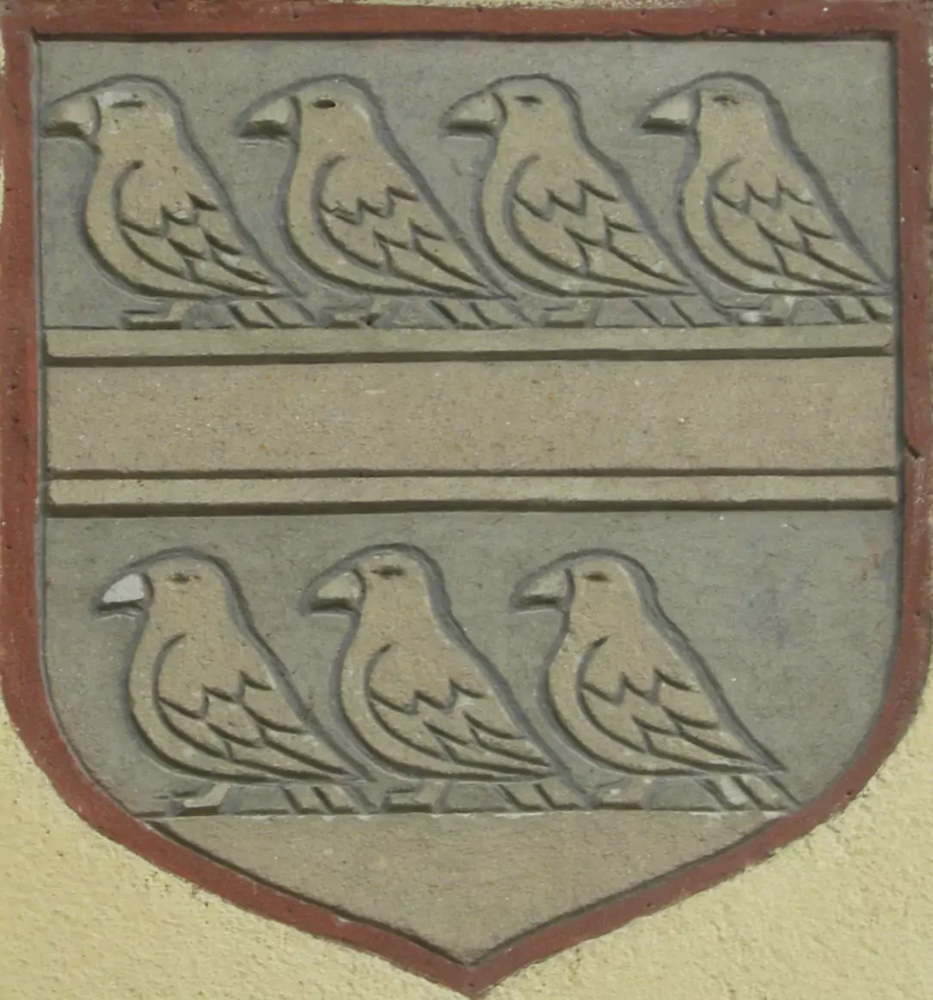

«Шлях Другетів»
Характеристика:
Маршрут:
вул.Українська - вул.Дєндеші - вул.Горянська - Горянська ротонда.
Довжина:
4 км.
Тривалість:
2 години.
Складність:
для новачків.

Опис:
В обласному центрі Закарпаття створили перший тематичний маршрут під назвою "Шлях Другетів".
Відкрили його 11 квітня на честь 720-ої річниці (1301 рік) приходу династії Другетів до
Угорщини в Ужгороді. Стартує веломаршрут на вулиці Українській, далі - Дєндеші, Горянська, аж
до знаменитої Горянської ротонди. Тут невдовзі встановлять дві велопарковки, щоб ужгородці та
гості міста охочіше мандрувати велосипедом.
вул.Українська
Другети (Drugeth) -
угорський магнатський рід франко-італійського походження. Назва походить від Ніколя, сина
Друго, якого звали Другет (малий Друго). Були гілкою французького роду де Мерло з
пфальцграфства Бургундія.
вул.Дєндеші
Садибний будинок у Радванці — пам'ятка архітектури національного значення,
виникнення якої
датується 16 століттям. Розташовується на околиці Ужгорода, за адресою вулиця Дєндеші,
8. Споруда належить до найбільш ранніх пам'яток місцевої житлової архітектури.
Відома й інша назва споруди — «Будівля Лісництва», виникнення якої пов'язано з тим, що
приміщення будівлі тривалий час використовувалось для потреб місцевого лісництва.
вул.Горянська
Запрошуємо всіх справжніх ужгородців проїхати з вдячністю до Другетів за стврення ними нашого
міста.
Горянська ротонда
Горя́нська рото́нда — одна з пам'яток архітектури національного значення. Розташована на
останньому пагорбі Карпат на околиці Ужгорода. Походження та вік ротонди невизначені до
сьогодні.
Сьогодні Горянська церква Покрови пресвятої Богородиці (недавно була перейменована) — це
шестикутна будова, в товщу стін якої врізано шість навпівкруглих ніш із трьома вікнами,
зверху на будові лежить полегшений тамбур із шістьма вікнами. Та чи не найпривабливішим є те,
що внутрішні стіни розписані у ХІV ст. художниками в стилі італійської проторенесансної школи
Джотто.
Маршрут на мапі: